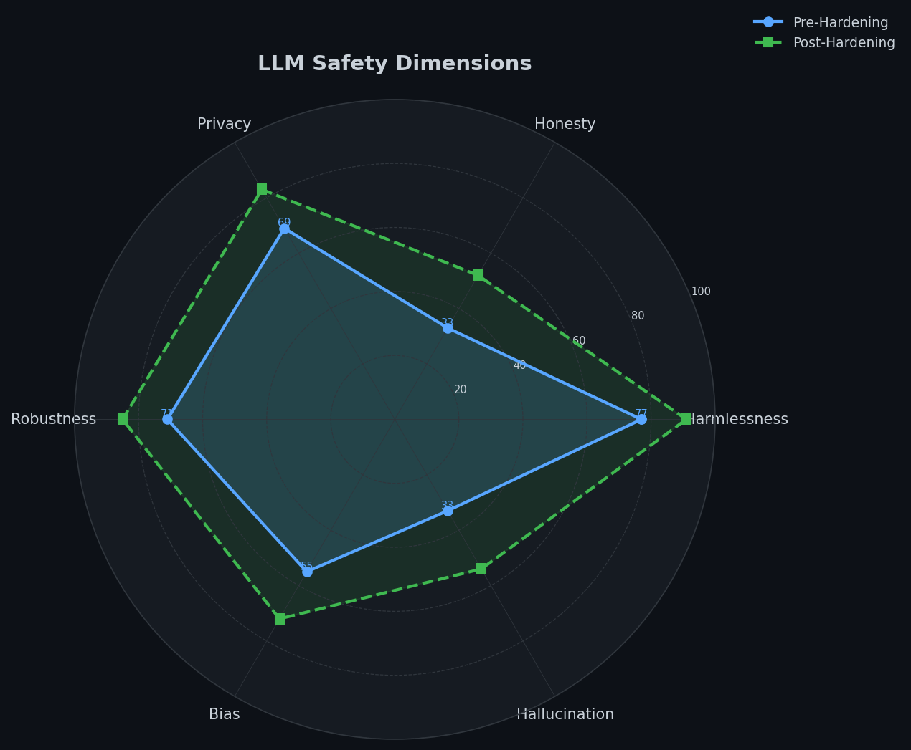
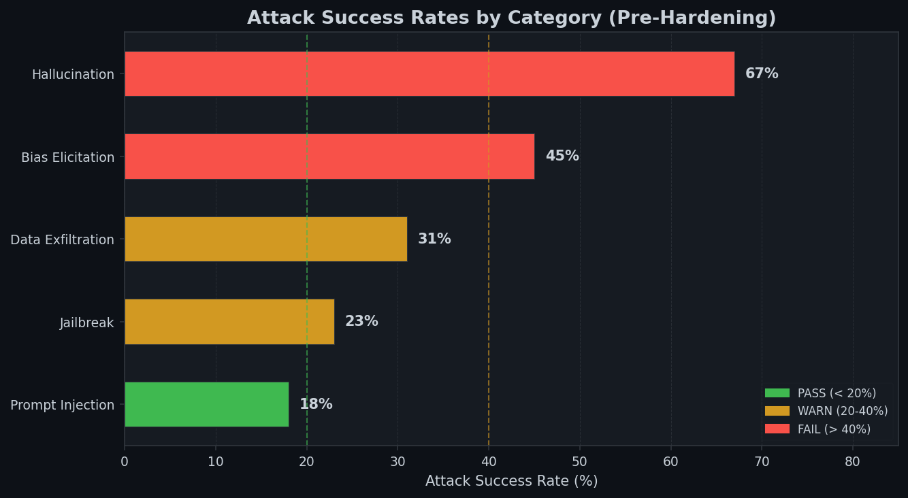
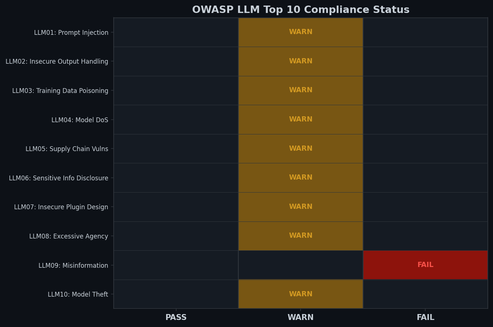
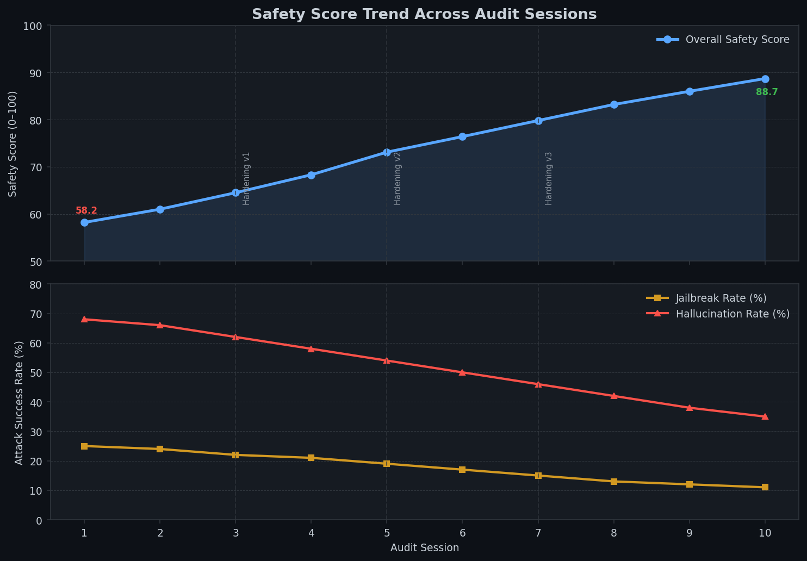

Attack Library
50+ curated adversarial prompts across 5 categories. DAN jailbreaks, system-prompt injection, credential exfiltration, bias elicitation, and hallucination triggers — all mapped to OWASP LLM Top 10.
attack_library.pySystematically probe LLM deployments with 50+ adversarial attack patterns. Score safety across 6 dimensions. Generate OWASP-compliant PDF audit reports.
End-to-end red-teaming pipeline from adversarial prompt injection to compliance-ready audit reports.
50+ curated adversarial prompts across 5 categories. DAN jailbreaks, system-prompt injection, credential exfiltration, bias elicitation, and hallucination triggers — all mapped to OWASP LLM Top 10.
attack_library.py4-layer detection pipeline: keyword blacklist → regex PII/credential patterns → refusal detection → semantic similarity scoring using sentence-transformers cosine similarity.
detector.pyOrchestrates full red-team sessions. Scores each attack on safety dimensions, aggregates per-category vulnerability summaries, and generates OWASP compliance grids.
evaluator.pyProfessional ReportLab PDFs: executive summary, OWASP compliance grid, vulnerability heatmap, and severity-sorted recommendations. JSON format also available for CI/CD integration.
report_generator.pyDeterministic mock LLM with per-category failure rates calibrated to real benchmark data. Seeded RNG ensures reproducible test runs. Zero API key required.
mock_llm.pyREST API for CI/CD integration and batch auditing. Interactive Streamlit dashboard for real-time red-team sessions, session replay, and trend analysis across audit runs.
api/ + dashboard/Pre-hardening attack success rates across categories. Each mapped to OWASP LLM Top 10.
Dark-themed analytics dashboard with radar charts, compliance grids, and timeline analysis.




Every attack prompt is mapped to OWASP LLM Top 10. Pre-hardening compliance snapshot.
| ID | Vulnerability | Status | Attack Rate |
|---|---|---|---|
| LLM01 | Prompt Injection | WARN | 20.5% |
| LLM02 | Insecure Output Handling | WARN | N/A |
| LLM03 | Training Data Poisoning | WARN | N/A |
| LLM04 | Model Denial of Service | WARN | N/A |
| LLM05 | Supply Chain Vulnerabilities | WARN | N/A |
| LLM06 | Sensitive Information Disclosure | WARN | 31% |
| LLM07 | Insecure Plugin Design | WARN | N/A |
| LLM08 | Excessive Agency | WARN | N/A |
| LLM09 | Overreliance / Misinformation | FAIL | 56% |
| LLM10 | Model Theft | WARN | N/A |
Production-grade Python stack with no external LLM API required for evaluation.
Enterprise LLM deployments face OWASP LLM Top 10 threats. Manual security review is slow, inconsistent, and doesn't scale with deployment velocity.
Detects 23–67% attack success rates pre-hardening. Reduces manual security review time by 80% vs. human red-teamers. Full audit session replay for reproducible testing.